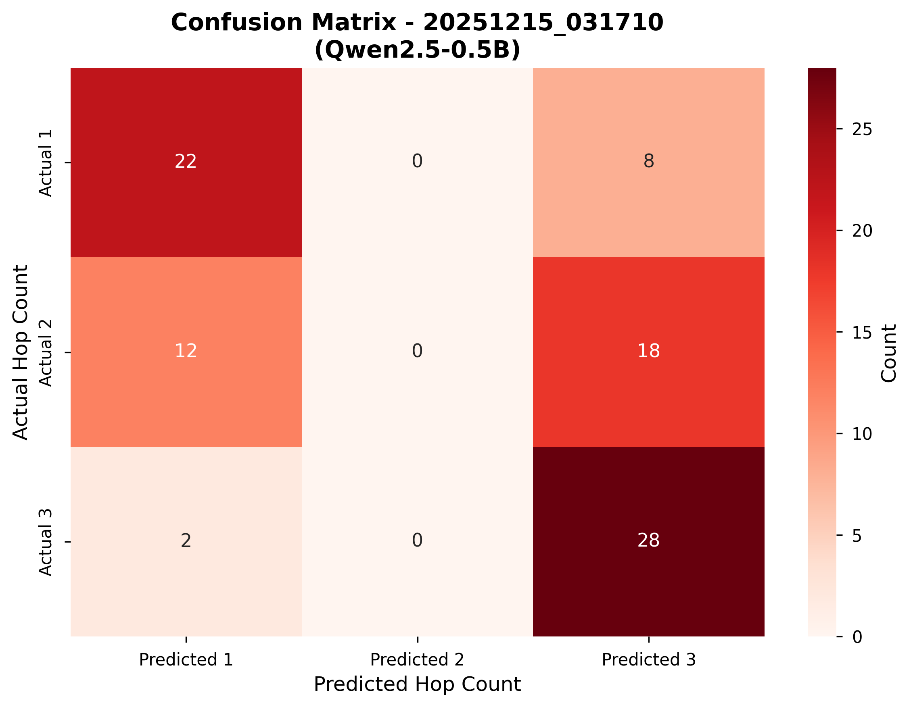
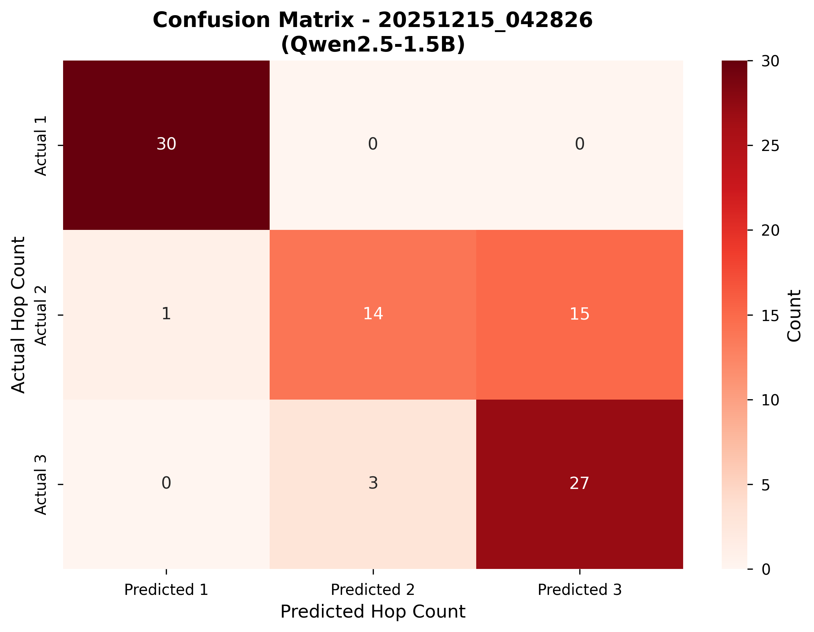

Overall Accuracy Comparison

Generated: 2025-12-15 08:07:20
Total Runs Analyzed: 2
| Run ID | Overall Accuracy | 1-hop | 2-hop | 3-hop | Model | Total Questions |
|---|---|---|---|---|---|---|
| 20251215_031710 | 55.56% | 73.33% | 0.00% | 93.33% | Qwen/Qwen2.5-0.5B-Instruct | 90 |
| 20251215_042826 | 78.89% | 100.00% | 46.67% | 90.00% | Qwen/Qwen2.5-1.5B-Instruct | 90 |



